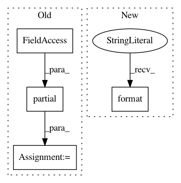

89fcfe5f49502043e45de93c47acfc6de2180647,keras_model.py,Code2VecModel,_create_metrics_for_keras_model,#Code2VecModel#,159
Before Change
return self.keras_model.get_layer("topk_predictions").output[0]
def _create_metrics_for_keras_model(self) -> List[keras.metrics.Metric]:
top_k_acc_metric = partial(
sparse_top_k_categorical_accuracy, k=self.config.TOP_K_WORDS_CONSIDERED_DURING_PREDICTION)
top_k_acc_metric.__name__ = "top{k}_acc".format(k=self.config.TOP_K_WORDS_CONSIDERED_DURING_PREDICTION)
words_subtoken_metrics_kwargs = {
"index_to_word_table": self.vocabs.target_vocab.get_index_to_word_lookup_table(),
"predicted_word_output": self.target_word_prediction_layer_output
After Change
for k in range(1, self.config.TOP_K_WORDS_CONSIDERED_DURING_PREDICTION + 1):
top_k_acc_metric = partial(
sparse_top_k_categorical_accuracy, k=k)
top_k_acc_metric.__name__ = "top{k}_acc".format(k=k)
top_k_acc_metrics.append(top_k_acc_metric)
words_subtoken_metrics_kwargs = {
"index_to_word_table": self.vocabs.target_vocab.get_index_to_word_lookup_table(),
"topk_predicted_words": self.topk_predicted_words,
In pattern: SUPERPATTERN
Frequency: 3
Non-data size: 4
Instances
Project Name: tech-srl/code2vec
Commit Name: 89fcfe5f49502043e45de93c47acfc6de2180647
Time: 2019-04-05
Author: eladnah@gmail.com
File Name: keras_model.py
Class Name: Code2VecModel
Method Name: _create_metrics_for_keras_model
Project Name: tensorflow/tpu
Commit Name: 1da5440d8444f99f79b597356e9342ffab0eaf5f
Time: 2020-04-14
Author: pengchong@google.com
File Name: models/official/detection/modeling/architecture/heads.py
Class Name: RpnHead
Method Name: __init__
Project Name: aertslab/pySCENIC
Commit Name: 5b824f9124e8690ce35118cb2ab8ecfe61fad8cc
Time: 2018-02-06
Author: vandesande.bram@gmail.com
File Name: src/pyscenic/regulome.py
Class Name:
Method Name: derive_regulomes